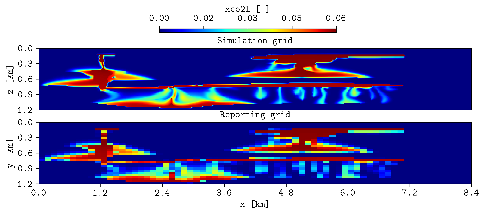
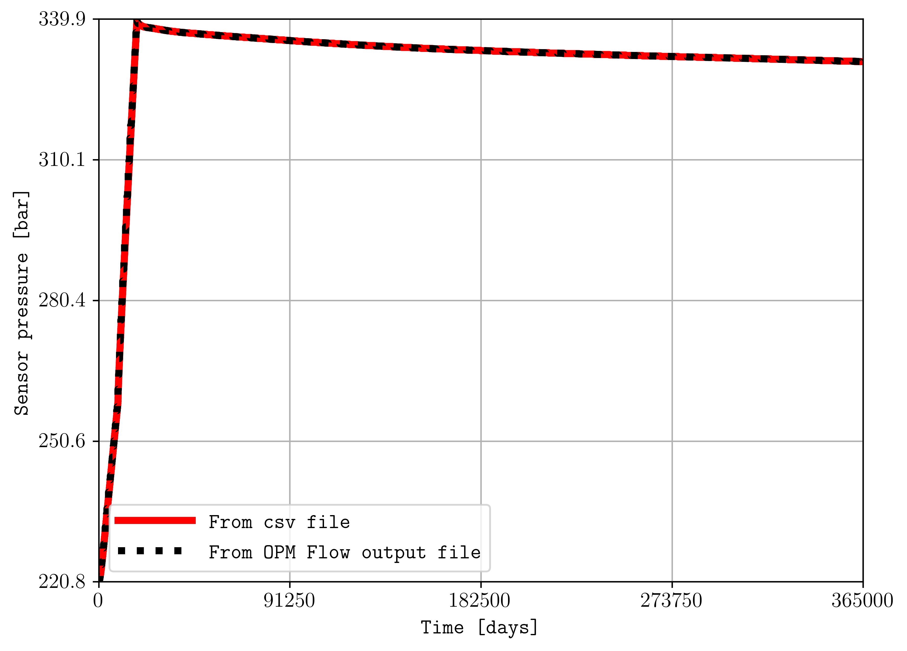
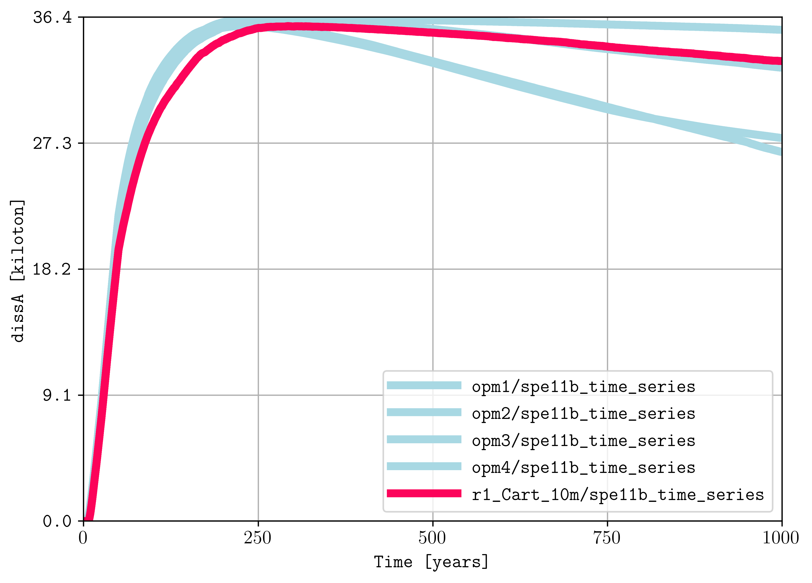
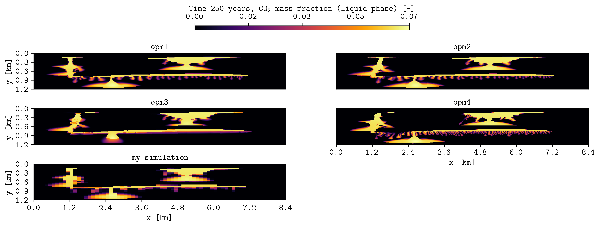

Reading CSV files#
Read time-series and spatial-map CSV files, compare benchmark submissions, and combine CSV data with OPM Flow output.
CSV column syntax#
Use plopm -cc to identify the columns in each CSV input. Column
indices start at 1:
Use
time,valuefor a time series, for example1,3.Use
x,y,valuefor a spatial map, for example1,2,5.Separate specifications for multiple inputs with semicolons.
Leave one specification empty when the corresponding input is an OPM Flow result rather than a CSV file.
Compare simulation and reporting grids#
Compare liquid-phase CO2 mass fraction on the OPM Flow simulation grid with the same quantity from the regular benchmark reporting grid:
plopm -v xco2l -i 'r1_Cart_10m/R1_CART_10M r1_Cart_10m/spe11b_spatial_map_500y' -cc ';1,2,5' -sg 2,1 -rdl 1 -r 100 -fs 10,3 -st 0 -t 'Simulation grid Reporting grid' -cbp 0.35,0.97,0.3,0.02 -yu km -xu km -yf .1f -xf .1f -cbn 5 -xnt 8 -cbf .2f
{kind=link}

Liquid-phase CO2 mass fraction from the OPM Flow simulation grid and the SPE11B reporting-grid CSV file at 500 years.#
The first column specification is empty because the first input is an OPM Flow case. The second input uses columns 1, 2, and 5 for x, y, and the plotted value.
Compare CSV and OPM summary data#
Compare a pressure time series from a CSV file with the corresponding OPM Flow summary vector:
plopm -i 'r1_Cart_10m/spe11b_time_series r1_Cart_10m/R1_CART_10M' -v ',BWPR:256,1,5' -cc '1,3;' -sf '1e-5,1' -ls 'solid,dotted' -lw '4,4' -yl 'Sensor pressure [bar]' -llb 'From CSV file From OPM Flow output file' -c 'r,k'
{kind=link}

Sensor pressure read from the SPE11B time-series CSV file and directly from the OPM Flow summary output.#
The empty first entry in plopm -v is a placeholder for the CSV input.
The empty second entry in plopm -cc indicates that the second input
is read as OPM Flow output. The scale factors convert the two sources to the
same displayed unit.
Compare benchmark time series#
After downloading the selected SPE11 benchmark submissions, compare the same CSV quantity from several participants and the pyopmspe11 simulation:
plopm -i 'opm1/spe11b_time_series opm2/spe11b_time_series opm3/spe11b_time_series opm4/spe11b_time_series r1_Cart_10m/spe11b_time_series' -cc '1,4;1,4;1,4;1,4;1,4' -tu y -x '[0,1000]' -yl 'dissA [kiloton]' -yf .1f -sf 1e-6 -c '#a8d8e3,#a8d8e3,#a8d8e3,#a8d8e3,#fc035a' -lw 5,5,5,5,5 -ls solid
{kind=link}

Dissolved CO2 mass in box A for several benchmark submissions and the pyopmspe11 simulation.#
Each input uses columns 1 and 4. The scale factor converts kilograms to kilotonnes, and the color selection highlights the local simulation.
Compare benchmark spatial maps#
Compare the same CSV spatial quantity from several benchmark submissions in a single subplot layout:
plopm -i 'opm1/spe11b_spatial_map_250y opm2/spe11b_spatial_map_250y opm3/spe11b_spatial_map_250y opm4/spe11b_spatial_map_250y r1_Cart_10m/spe11b_spatial_map_250y' -cc '1,2,5;1,2,5;1,2,5;1,2,5;1,2,5' -sg 3,2 -rdl 1 -st 0 -cbp 0.35,0.97,0.3,0.02 -yu km -xu km -yf .1f -xf .1f -cbn 5 -xnt 8 -cbf .2f -fs 14,4 -t 'opm1 opm2 opm3 opm4 my simulation' -cbl 'Time 250 years, CO$_2$ mass fraction (liquid phase) [-]' -c inferno
{kind=link}

Liquid-phase CO2 mass fraction at 250 years for several benchmark submissions and the pyopmspe11 simulation.#
All inputs use columns 1, 2, and 5 for x, y, and liquid-phase CO2 mass fraction. A global colorbar makes the maps directly comparable.
Create animations from CSV sequences#
To create a GIF from a sequence of CSV spatial-map files, include PLOPM in
the input filename where the time value changes. Select the required times with
plopm -r and use -m gif. plopm replaces PLOPM with each
selected time when reading the files.
Reproduce this example#
Run the complete workflow from the repository root. The script downloads or prepares the required benchmark CSV inputs before generating the figures:
. ./tests/scripts/docs_reading_csvs.sh